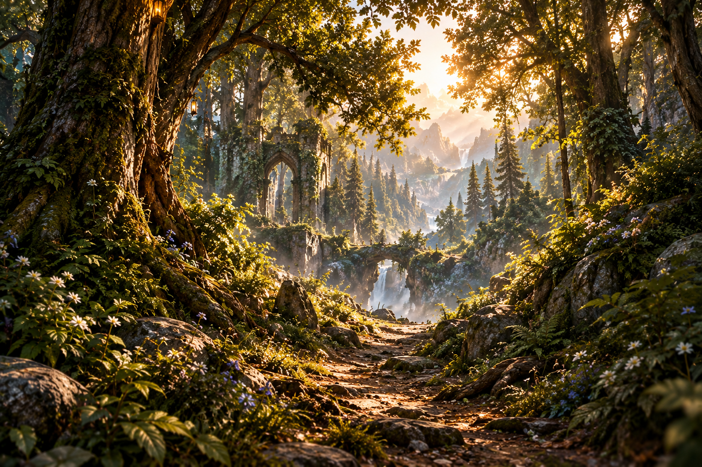
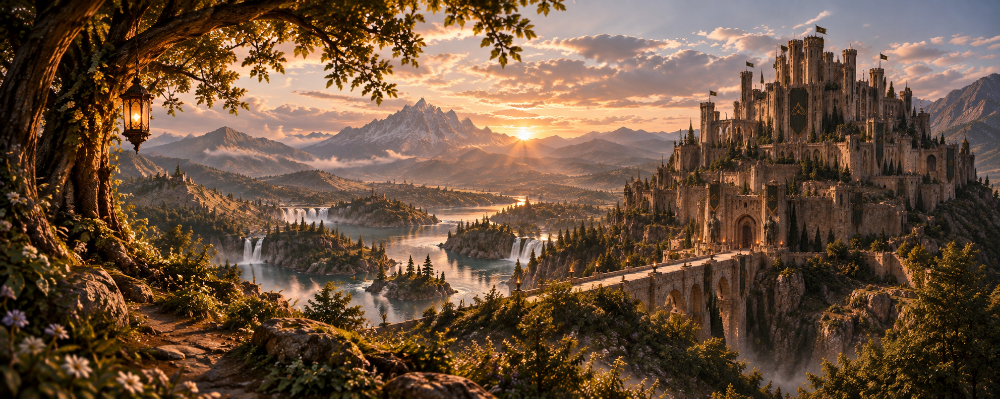
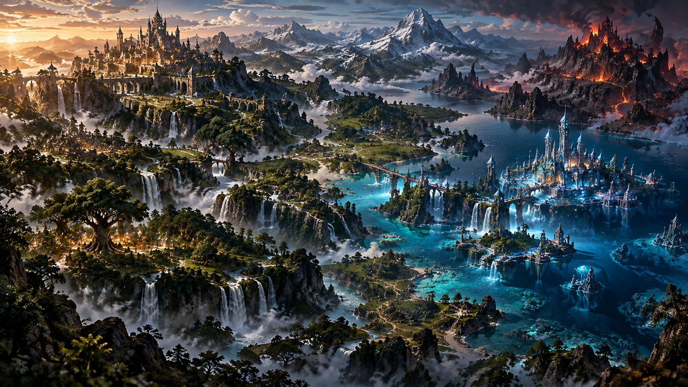

CAPÍTULO 01
Onde a natureza guarda segredos, os reinos se entrelaçam e o destino segue outros caminhos.
ENTRAR NO UNIVERSO →Existem caminhos entre a floresta e as águas. Cada um guarda uma parte desta história.
“Existem lugares que não aparecem em nenhum mapa. Existem histórias que esperam alguém encontrá-las.”
Existem lugares que não aparecem em nenhum mapa. Existem histórias que esperam alguém encontrá-las.
Entre a floresta e as águas existe um mundo onde quatro reinos guardam seus próprios mistérios, suas próprias histórias e um destino que talvez nunca devesse ter sido cruzado.
Espíritos, soberanos e aqueles que caminham entre os limites dos reinos.
Florestas antigas, águas profundas, montanhas e territórios onde a natureza possui suas próprias leis.
Abra um livro, acenda uma vela e atravesse as páginas para descobrir o que existe entre a floresta e as águas.



Cada capítulo escrito faz este universo crescer um pouco mais. Se esta história encontrar um lugar em você, poderá ajudar a mantê-la viva.
VOLTAR AO INÍCIO →